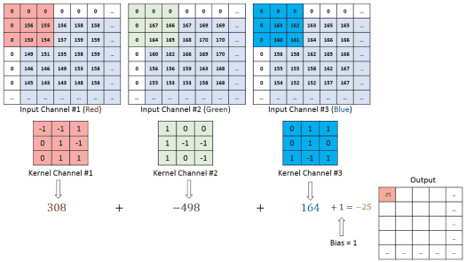

Cnn guia completo
Introdução às CNNs¶
O que são Redes Neurais Convolucionais?¶
As Redes Neurais Convolucionais (CNNs) são um tipo de rede neural artificial, projetada para processar dados que possuem uma estrutura topológica similar a uma grade, como:
- Imagens (grade 2D de pixels)
- Sinais de áudio (grade 1D temporal)
- Vídeos (grade 3D: altura × largura × tempo)
- Sequências de DNA (grade 1D de nucleotídeos)
Vantagens sobre MLPs Tradicionais¶
| Aspecto | MLP Tradicional | CNN |
|---|---|---|
| Parâmetros | 24M+ para imagem 400×600 | ~100K para mesma imagem |
| Estrutura espacial | Ignorada | Preservada |
| Invariância | Sensível à posição | Invariante à translação |
| Compartilhamento | Sem reutilização | Compartilha pesos |
| Eficiência | Computacionalmente caro | Eficiente |
Arquitetura Geral de uma CNN¶

Fundamentos Matemáticos¶
Operação de Convolução Matemática¶
A convolução é uma operação matemática fundamental definida como:
Convolução Contínua:
(f * g)(t) = ∫_{-∞}^{∞} f(τ)g(t-τ)dτ
Convolução Discreta (usada em CNNs):
(f * g)[n] = Σ_{m=-∞}^{∞} f[m]g[n-m]
Convolução 2D para Imagens¶
Para imagens, usamos correlação cruzada (tecnicamente, não convolução pura):

S(i,j) = (I * K)(i,j) = ΣΣ I(i+m, j+n) × K(m,n)
m n
Onde:
- I: Imagem de entrada
- K: Kernel (filtro)
- S: Feature map (mapa de características)
Exemplo Prático de Convolução¶
Imagem 5×5:
1 2 3 0 1
0 1 2 3 1
1 0 1 2 0
2 1 0 1 2
1 0 2 1 0
Kernel 3×3 (Detector de Borda):
-1 -1 -1
-1 8 -1
-1 -1 -1
Resultado (Feature Map):
Posição (1,1): (-1×1) + (-1×2) + (-1×3) + (-1×0) + (8×1) + (-1×2) + (-1×1) + (-1×0) + (-1×1) = -5
Operação de Convolução¶
Componentes da Camada Convolucional¶
1. Kernels/Filtros¶
- Tamanho: Normalmente 3×3, 5×5, 7×7
- Profundidade: Igual à profundidade da entrada
- Quantidade: Hyperparâmetro (32, 64, 128, 256...)
- Pesos: Aprendidos durante treinamento
2. Stride (Passo)¶
- Definição: Quantos pixels o kernel "pula" a cada operação
- Stride = 1: Sobreposição máxima
- Stride = 2: Reduz dimensão pela metade
- Fórmula de saída:
(W - F + 2P) / S + 1
3. Padding (Preenchimento)¶
- Valid: Sem padding (saída menor)
- Same: Padding para manter dimensão
- Causal: Para dados sequenciais
Tipos de Convoluções¶
Convolução Standard¶
# Exemplo com TensorFlow/Keras
layers.Conv2D(filters=32, kernel_size=(3,3), stride=(1,1), padding='same')
Convolução Depthwise Separable¶
layers.SeparableConv2D(filters=32, kernel_size=(3,3))
Convolução Dilatada (Atrous)¶
layers.Conv2D(filters=32, kernel_size=(3,3), dilation_rate=(2,2))
Convolução Transposta (Deconvolução)¶
layers.Conv2DTranspose(filters=32, kernel_size=(3,3), strides=(2,2))
Visualização da Convolução¶
Entrada (6×6): Kernel (3×3): Saída (4×4):
┌─────────────┐ ┌─────────┐ ┌─────────┐
│1 2 3 0 1 2│ │1 0 1│ │? ? ? ?│
│0 1 2 3 1 0│ * │0 1 0│ = │? ? ? ?│
│1 0 1 2 0 1│ │1 0 1│ │? ? ? ?│
│2 1 0 1 2 0│ └─────────┘ │? ? ? ?│
│1 0 2 1 0 2│ └─────────┘
│0 1 0 2 1 0│
└─────────────┘
Pooling e Subsampling¶
Objetivos do Pooling¶
- Redução dimensional: Diminui tamanho dos feature maps
- Invariância: Pequenas translações não afetam resultado
- Redução de overfitting: Menos parâmetros
- Eficiência computacional: Operação mais rápida
Tipos de Pooling¶
Max Pooling¶
layers.MaxPool2D(pool_size=(2,2), strides=(2,2))
Exemplo:
Entrada (4×4): Max Pool 2×2: Saída (2×2):
┌─────────────┐ ┌─────────────┐ ┌─────────┐
│1 3 2 4│ │max(1,3,0,1)│ │3 4│
│0 1 1 2│ → │max(2,4,1,2)│ = │2 5│
│2 2 0 1│ │max(2,2,3,1)│ └─────────┘
│3 1 3 5│ │max(0,1,3,5)│
└─────────────┘ └─────────────┘
Average Pooling¶
layers.AveragePooling2D(pool_size=(2,2))
Global Average Pooling¶
layers.GlobalAveragePooling2D()
Adaptive Pooling¶
- Objetivo: Saída com tamanho fixo independente da entrada
- Uso: Redes com entradas de tamanhos variados
Pooling vs Stride Convolution¶
| Aspecto | Pooling | Strided Convolution |
|---|---|---|
| Parâmetros | 0 | Sim |
| Aprendizado | Não | Sim |
| Flexibilidade | Fixa | Adaptável |
| Tendência atual | ↓ Diminuindo | ↑ Aumentando |
Arquiteturas Clássicas¶
LeNet-5 (1998) - Yann LeCun¶
Arquitetura:
INPUT(32×32×1) → CONV1(28×28×6) → POOL1(14×14×6) →
CONV2(10×10×16) → POOL2(5×5×16) → FC1(120) → FC2(84) → OUTPUT(10)
Características: - ✅ Primeira CNN bem-sucedida - ✅ Reconhecimento de dígitos - ✅ Base para arquiteturas modernas
Implementação:
model = Sequential([
Conv2D(6, (5,5), activation='tanh', input_shape=(32,32,1)),
AveragePooling2D((2,2)),
Conv2D(16, (5,5), activation='tanh'),
AveragePooling2D((2,2)),
Flatten(),
Dense(120, activation='tanh'),
Dense(84, activation='tanh'),
Dense(10, activation='softmax')
])
AlexNet (2012) - Alex Krizhevsky¶
Inovações: - 🚀 ReLU: Primeira CNN com ReLU em larga escala - 🔄 Dropout: Regularização efetiva - 📊 Data Augmentation: Aumento artificial do dataset - ⚡ GPU: Treinamento paralelo
Arquitetura:
INPUT(224×224×3) → CONV1(55×55×96) → POOL1 → CONV2(27×27×256) → POOL2 →
CONV3(13×13×384) → CONV4(13×13×384) → CONV5(13×13×256) → POOL3 →
FC1(4096) → FC2(4096) → FC3(1000)
VGGNet (2014) - Oxford¶
Filosofia: "Convoluções pequenas e profundas"
Princípios: - 🔹 Kernels 3×3: Exclusivamente - 📚 Profundidade: 16-19 camadas - 🔄 Repetição: Padrões consistentes
VGG-16 Arquitetura:
# Bloco 1
Conv2D(64, (3,3), activation='relu', padding='same')
Conv2D(64, (3,3), activation='relu', padding='same')
MaxPooling2D((2,2), strides=(2,2))
# Bloco 2
Conv2D(128, (3,3), activation='relu', padding='same')
Conv2D(128, (3,3), activation='relu', padding='same')
MaxPooling2D((2,2), strides=(2,2))
# ... continua com blocos similares
ResNet (2015) - Microsoft Research¶
Problema Resolvido: Degradação em redes muito profundas
Inovação: Conexões Residuais (Skip Connections)
x → [CONV→BN→ReLU→CONV→BN] → + → ReLU
↓ ↑
└─────────────────────────────┘
(skip connection)
Bloco Residual:
def residual_block(x, filters):
shortcut = x
x = Conv2D(filters, (3,3), padding='same')(x)
x = BatchNormalization()(x)
x = Activation('relu')(x)
x = Conv2D(filters, (3,3), padding='same')(x)
x = BatchNormalization()(x)
x = Add()([x, shortcut])
x = Activation('relu')(x)
return x
Arquiteturas Modernas¶
EfficientNet (2019)¶
- Compound Scaling: Balanceia largura, profundidade e resolução
- Neural Architecture Search: Arquitetura otimizada automaticamente
Vision Transformer (ViT) (2020)¶
- Attention Mechanism: Substitui convoluções por atenção
- Patches: Divide imagem em patches como tokens
ConvNeXt (2022)¶
- CNN Modernizada: Incorpora ideias dos Transformers
- Performance: Competitiva com ViTs
Implementação Prática¶
Preparação dos Dados¶
import tensorflow as tf
from tensorflow import keras
from tensorflow.keras import layers
import numpy as np
import matplotlib.pyplot as plt
# Carregamento e preparação
(x_train, y_train), (x_test, y_test) = keras.datasets.cifar10.load_data()
# Normalização
x_train = x_train.astype('float32') / 255.0
x_test = x_test.astype('float32') / 255.0
# One-hot encoding
y_train = keras.utils.to_categorical(y_train, 10)
y_test = keras.utils.to_categorical(y_test, 10)
CNN Básica para CIFAR-10¶
def create_basic_cnn():
model = keras.Sequential([
# Bloco 1
layers.Conv2D(32, (3,3), activation='relu', input_shape=(32,32,3)),
layers.BatchNormalization(),
layers.Conv2D(32, (3,3), activation='relu'),
layers.MaxPooling2D((2,2)),
layers.Dropout(0.25),
# Bloco 2
layers.Conv2D(64, (3,3), activation='relu'),
layers.BatchNormalization(),
layers.Conv2D(64, (3,3), activation='relu'),
layers.MaxPooling2D((2,2)),
layers.Dropout(0.25),
# Bloco 3
layers.Conv2D(128, (3,3), activation='relu'),
layers.BatchNormalization(),
layers.Conv2D(128, (3,3), activation='relu'),
layers.MaxPooling2D((2,2)),
layers.Dropout(0.25),
# Classificador
layers.GlobalAveragePooling2D(),
layers.Dense(512, activation='relu'),
layers.Dropout(0.5),
layers.Dense(10, activation='softmax')
])
return model
model = create_basic_cnn()
model.summary()
Técnicas de Treinamento¶
Data Augmentation¶
datagen = keras.preprocessing.image.ImageDataGenerator(
rotation_range=15,
width_shift_range=0.1,
height_shift_range=0.1,
horizontal_flip=True,
zoom_range=0.1
)
datagen.fit(x_train)
Callbacks¶
callbacks = [
keras.callbacks.EarlyStopping(patience=10, restore_best_weights=True),
keras.callbacks.ReduceLROnPlateau(factor=0.2, patience=5),
keras.callbacks.ModelCheckpoint('best_model.h5', save_best_only=True)
]
Compilação e Treinamento¶
model.compile(
optimizer=keras.optimizers.Adam(learning_rate=0.001),
loss='categorical_crossentropy',
metrics=['accuracy']
)
history = model.fit(
datagen.flow(x_train, y_train, batch_size=32),
steps_per_epoch=len(x_train) // 32,
epochs=100,
validation_data=(x_test, y_test),
callbacks=callbacks
)
Técnicas Avançadas¶
Transfer Learning¶
Conceito: Usar modelos pré-treinados como ponto de partida
# Carregar modelo pré-treinado
base_model = keras.applications.VGG16(
weights='imagenet',
include_top=False,
input_shape=(224, 224, 3)
)
# Congelar camadas base
base_model.trainable = False
# Adicionar cabeçalho personalizado
model = keras.Sequential([
base_model,
layers.GlobalAveragePooling2D(),
layers.Dense(128, activation='relu'),
layers.Dropout(0.2),
layers.Dense(num_classes, activation='softmax')
])
Fine-tuning¶
# Após treinamento inicial, descongelar e treinar com LR baixa
base_model.trainable = True
model.compile(
optimizer=keras.optimizers.Adam(1e-5), # LR muito baixa
loss='categorical_crossentropy',
metrics=['accuracy']
)
# Treinar mais algumas épocas
history_fine = model.fit(...)
Interpretabilidade¶
Grad-CAM (Gradient-weighted Class Activation Mapping)¶
def generate_gradcam(model, img_array, layer_name, class_index):
grad_model = keras.Model(
inputs=model.inputs,
outputs=[model.get_layer(layer_name).output, model.output]
)
with tf.GradientTape() as tape:
conv_outputs, predictions = grad_model(img_array)
loss = predictions[:, class_index]
grads = tape.gradient(loss, conv_outputs)
pooled_grads = tf.reduce_mean(grads, axis=(0, 1, 2))
conv_outputs = conv_outputs[0]
heatmap = conv_outputs @ pooled_grads[..., tf.newaxis]
heatmap = tf.squeeze(heatmap)
heatmap = tf.maximum(heatmap, 0) / tf.math.reduce_max(heatmap)
return heatmap.numpy()
Otimizações de Performance¶
Mixed Precision Training¶
policy = keras.mixed_precision.Policy('mixed_float16')
keras.mixed_precision.set_global_policy(policy)
Quantização¶
# Post-training quantization
converter = tf.lite.TFLiteConverter.from_saved_model('model_path')
converter.optimizations = [tf.lite.Optimize.DEFAULT]
quantized_model = converter.convert()
Aplicações e Casos de Uso¶
1. Classificação de Imagens¶
Datasets Clássicos: - MNIST: Dígitos manuscritos (28×28) - CIFAR-10/100: Objetos naturais (32×32) - ImageNet: 1000 classes, milhões de imagens - Places365: Reconhecimento de cenas
Aplicações Reais: - 🏥 Diagnóstico médico: Raio-X, ressonância, dermatologia - 🚗 Veículos autônomos: Detecção de placas, pedestres - 🛡️ Segurança: Reconhecimento facial, videomonitoramento - 📱 Mobile: Filtros, busca por imagem
2. Detecção de Objetos¶
Arquiteturas: - R-CNN Family: R-CNN, Fast R-CNN, Faster R-CNN - YOLO: You Only Look Once (v1-v8) - SSD: Single Shot MultiBox Detector - EfficientDet: Detecção eficiente
Aplicações: - 🚦 Trânsito inteligente: Contagem de veículos - 🏭 Indústria: Controle de qualidade, automação - 🏪 Retail: Checkout automático, inventário - 🌾 Agricultura: Monitoramento de culturas
3. Segmentação Semântica¶
Arquiteturas: - U-Net: Segmentação médica - DeepLab: Convolução atrous - PSPNet: Pyramid Scene Parsing - Mask R-CNN: Segmentação de instâncias
Aplicações: - 🏥 Medicina: Segmentação de órgãos, tumores - 🛰️ Sensoriamento remoto: Análise de satélites - 🎬 Entretenimento: Chroma key, efeitos especiais - 🏗️ Arquitetura: Análise urbana, planejamento
4. Processamento de Vídeo¶
Técnicas: - 3D CNNs: Convolução espaço-temporal - Two-Stream Networks: RGB + Optical Flow - LSTM + CNN: Sequências temporais
Aplicações: - 🎯 Reconhecimento de ações: Esportes, vigilância - 🎞️ Análise de vídeo: Sumarização, indexação - 🏃 Análise de movimento: Biomecânica, reabilitação
Exercícios e Projetos¶
Nível Iniciante¶
Projeto 1: Classificador de Dígitos MNIST¶
# Implemente uma CNN simples para MNIST
# Objetivo: >98% de acurácia
# Técnicas: Conv2D, MaxPooling, Dropout
def create_mnist_cnn():
# Seu código aqui
pass
Projeto 2: Fashion-MNIST¶
# Classifique itens de vestuário
# Objetivo: >90% de acurácia
# Desafio: Mais complexo que dígitos
def create_fashion_cnn():
# Seu código aqui
pass
Nível Intermediário¶
Projeto 3: CIFAR-10 com Data Augmentation¶
# Objetivo: >85% de acurácia
# Técnicas: Data augmentation, batch normalization
# Tempo limite: 2 horas de treinamento
def create_cifar10_cnn():
# Seu código aqui
pass
Projeto 4: Transfer Learning¶
# Use um modelo pré-treinado para novo dataset
# Compare com treinamento do zero
# Analise o tempo de convergência
def transfer_learning_project():
# Seu código aqui
pass
Nível Avançado¶
Projeto 5: Implementar ResNet do Zero¶
# Implemente blocos residuais
# Compare com CNN convencional
# Analise o gradiente em redes profundas
class ResNetBlock(layers.Layer):
def __init__(self, filters, downsample=False):
# Seu código aqui
pass
Projeto 6: Detecção de Objetos Simples¶
# Implemente um detector simples
# Use técnicas de sliding window
# Avalie com métricas de detecção (mAP)
def simple_object_detector():
# Seu código aqui
pass
Projetos Aplicados¶
Projeto 7: Diagnóstico Médico¶
- Dataset: Chest X-Ray pneumonia
- Objetivo: Classificar pneumonia vs normal
- Métricas: Sensibilidade, especificidade, F1-score
- Considerações éticas: Falsos negativos
Projeto 8: Classificação de Plantas¶
- Dataset: PlantNet ou similar
- Técnicas: Transfer learning, data augmentation
- Aplicação: App móvel de identificação
Projeto 9: Análise de Sentimentos Visual¶
- Dataset: Imagens de redes sociais
- Objetivo: Predizer sentimento pela imagem
- Desafio: Multimodalidade (imagem + texto)
Debugging e Troubleshooting¶
Problemas Comuns¶
1. Overfitting¶
Sintomas: - Alta acurácia no treino, baixa no teste - Gap crescente entre curvas de treino e validação
Soluções:
# Mais dados
datagen = ImageDataGenerator(...)
# Dropout
layers.Dropout(0.5)
# Regularização L2
layers.Conv2D(64, (3,3), kernel_regularizer=l2(0.01))
# Early stopping
callbacks = [EarlyStopping(patience=10)]
2. Underfitting¶
Sintomas: - Baixa acurácia tanto no treino quanto no teste - Curvas de loss não convergem
Soluções:
# Modelo mais complexo
# Mais camadas ou mais filtros
# Learning rate adequada
optimizer = Adam(learning_rate=0.001)
# Mais épocas de treinamento
epochs = 200
3. Vanishing Gradients¶
Sintomas: - Camadas iniciais não aprendem - Gradientes muito pequenos
Soluções:
# Batch Normalization
layers.BatchNormalization()
# Residual connections
# Skip connections
# Ativações adequadas (ReLU, não sigmoid)
activation='relu'
4. Exploding Gradients¶
Sintomas: - Loss explode para infinito - Pesos ficam NaN
Soluções:
# Gradient clipping
optimizer = Adam(clipnorm=1.0)
# Learning rate menor
learning_rate = 0.0001
# Batch normalization
layers.BatchNormalization()
Monitoramento de Treinamento¶
# Visualização em tempo real
def plot_training_history(history):
fig, (ax1, ax2) = plt.subplots(1, 2, figsize=(12, 4))
# Loss
ax1.plot(history.history['loss'], label='Train Loss')
ax1.plot(history.history['val_loss'], label='Val Loss')
ax1.set_title('Model Loss')
ax1.set_xlabel('Epoch')
ax1.set_ylabel('Loss')
ax1.legend()
# Accuracy
ax2.plot(history.history['accuracy'], label='Train Acc')
ax2.plot(history.history['val_accuracy'], label='Val Acc')
ax2.set_title('Model Accuracy')
ax2.set_xlabel('Epoch')
ax2.set_ylabel('Accuracy')
ax2.legend()
plt.tight_layout()
plt.show()
Métricas de Avaliação¶
Classificação¶
Métricas Básicas¶
from sklearn.metrics import classification_report, confusion_matrix
# Predições
y_pred = model.predict(x_test)
y_pred_classes = np.argmax(y_pred, axis=1)
y_true = np.argmax(y_test, axis=1)
# Relatório completo
print(classification_report(y_true, y_pred_classes))
# Matriz de confusão
cm = confusion_matrix(y_true, y_pred_classes)
Métricas Avançadas¶
# Top-k accuracy
top_k_acc = keras.metrics.top_k_categorical_accuracy(y_test, y_pred, k=5)
# Curva ROC (para classificação binária)
from sklearn.metrics import roc_curve, auc
fpr, tpr, _ = roc_curve(y_true, y_pred_proba)
roc_auc = auc(fpr, tpr)
Detecção de Objetos¶
Mean Average Precision (mAP)¶
def calculate_map(true_boxes, pred_boxes, iou_threshold=0.5):
"""
Calcula mAP para detecção de objetos
"""
# Implementação simplificada
pass
Segmentação¶
Intersection over Union (IoU)¶
def calculate_iou(y_true, y_pred):
intersection = np.logical_and(y_true, y_pred)
union = np.logical_or(y_true, y_pred)
iou = np.sum(intersection) / np.sum(union)
return iou
Ferramentas e Frameworks¶
TensorFlow/Keras¶
# Instalação
pip install tensorflow tensorflow-gpu
# Uso básico
import tensorflow as tf
from tensorflow import keras
PyTorch¶
# Instalação
pip install torch torchvision
# Uso básico
import torch
import torch.nn as nn
import torchvision
Outras Ferramentas¶
Visualização¶
# TensorBoard
tensorboard_callback = keras.callbacks.TensorBoard(log_dir='./logs')
# Weights & Biases
import wandb
wandb.init(project="my-cnn-project")
Datasets¶
# TensorFlow Datasets
import tensorflow_datasets as tfds
dataset = tfds.load('cifar10', split='train')
# Torchvision datasets
from torchvision import datasets
dataset = datasets.CIFAR10(root='./data', download=True)
Augmentation¶
# Albumentations
import albumentations as A
transform = A.Compose([
A.HorizontalFlip(p=0.5),
A.Rotate(limit=15, p=0.5),
A.RandomBrightnessContrast(p=0.2)
])
Recursos Adicionais¶
Cursos Online¶
- 🎓 CS231n: Stanford - Convolutional Neural Networks
- 🎓 Fast.ai: Practical Deep Learning for Coders
- 🎓 Deep Learning Specialization: Coursera (Andrew Ng)
- 🎓 TensorFlow Developer Certificate: Google
Livros Recomendados¶
- 📚 "Deep Learning" - Ian Goodfellow, Yoshua Bengio, Aaron Courville
- 📚 "Hands-On Machine Learning" - Aurélien Géron
- 📚 "Deep Learning with Python" - François Chollet
- 📚 "Computer Vision: Algorithms and Applications" - Richard Szeliski
Papers Fundamentais¶
- 📄 LeNet-5 (1998): "Gradient-based learning applied to document recognition"
- 📄 AlexNet (2012): "ImageNet Classification with Deep Convolutional Neural Networks"
- 📄 VGG (2014): "Very Deep Convolutional Networks for Large-Scale Image Recognition"
- 📄 ResNet (2015): "Deep Residual Learning for Image Recognition"
- 📄 Attention (2017): "Attention Is All You Need"
Datasets Populares¶
- 🗂️ ImageNet: 14M imagens, 1000 classes
- 🗂️ COCO: Detecção e segmentação
- 🗂️ Open Images: 9M imagens anotadas
- 🗂️ Places365: Reconhecimento de cenas
- 🗂️ CelebA: Atributos faciais
Competições e Desafios¶
- 🏆 ImageNet Large Scale Visual Recognition Challenge (ILSVRC)
- 🏆 Kaggle Computer Vision Competitions
- 🏆 COCO Detection Challenge
- 🏆 Pascal VOC Challenge
Comunidades¶
- 💬 Reddit: r/MachineLearning, r/ComputerVision
- 💬 Discord: TensorFlow Community, PyTorch Community
- 💬 Stack Overflow: Tags [tensorflow], [computer-vision]
- 💬 Papers with Code: Estado da arte em CV
Tendências Futuras¶
Vision Transformers (ViTs)¶
- Substituição gradual de CNNs em alguns domínios
- Melhor performance em datasets grandes
- Atenção global vs. campos receptivos locais
Neural Architecture Search (NAS)¶
- Automação do design de arquiteturas
- EfficientNet, RegNet como exemplos
- Otimização para dispositivos específicos
Self-Supervised Learning¶
- Aprendizado sem rótulos
- Contrastive learning, MAE (Masked Autoencoders)
- Redução da dependência de dados anotados
Edge Computing¶
- CNNs otimizadas para dispositivos móveis
- Quantização, pruning, knowledge distillation
- MobileNets, EfficientNets como precursores
Multimodalidade¶
- Integração de visão com linguagem
- CLIP, DALL-E como exemplos
- Aplicações em robótica e IA geral
Conclusão¶
As Redes Neurais Convolucionais revolucionaram o campo da Visão Computacional e continuam sendo uma ferramenta fundamental para processamento de dados visuais. Desde a simples LeNet-5 até as arquiteturas modernas como EfficientNet e Vision Transformers, as CNNs demonstraram capacidade excepcional de:
✅ Aprender representações hierárquicas de características visuais ✅ Generalizar para novos dados com performance superior ✅ Escalar para problemas complexos do mundo real ✅ Adaptar-se a diferentes domínios através de transfer learning
Pontos-chave para lembrar:¶
- Fundamentos sólidos: Entenda convolução, pooling e backpropagation
- Prática constante: Implemente desde CNNs básicas até arquiteturas avançadas
- Experimentação: Teste diferentes arquiteturas e hiperparâmetros
- Dados de qualidade: Invista tempo em preparação e augmentation
- Avaliação rigorosa: Use métricas apropriadas e validação cruzada
- Acompanhe tendências: Campo em rápida evolução
Próximos passos recomendados:¶
🚀 Imediatos: Complete os exercícios práticos deste guia 🚀 Curto prazo: Participe de competições Kaggle 🚀 Médio prazo: Estude Vision Transformers e técnicas modernas 🚀 Longo prazo: Contribua para projetos open source e pesquisa
O domínio das CNNs abre portas para áreas fascinantes como robótica, realidade aumentada, medicina digital e muito mais. Continue praticando, experimentando e explorando - o futuro da visão computacional está em suas mãos! 🌟
"The best way to learn deep learning is by doing deep learning." - Andrew Ng
Bons estudos e que a força (convolucional) esteja com você! 🤖✨